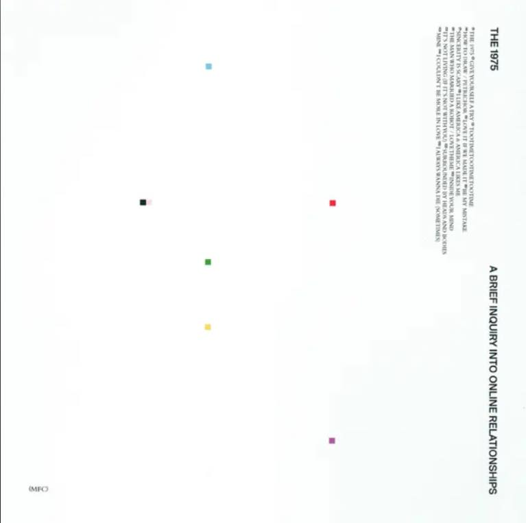
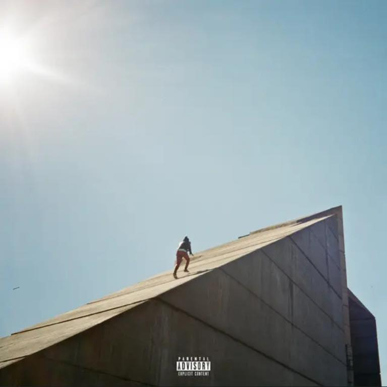
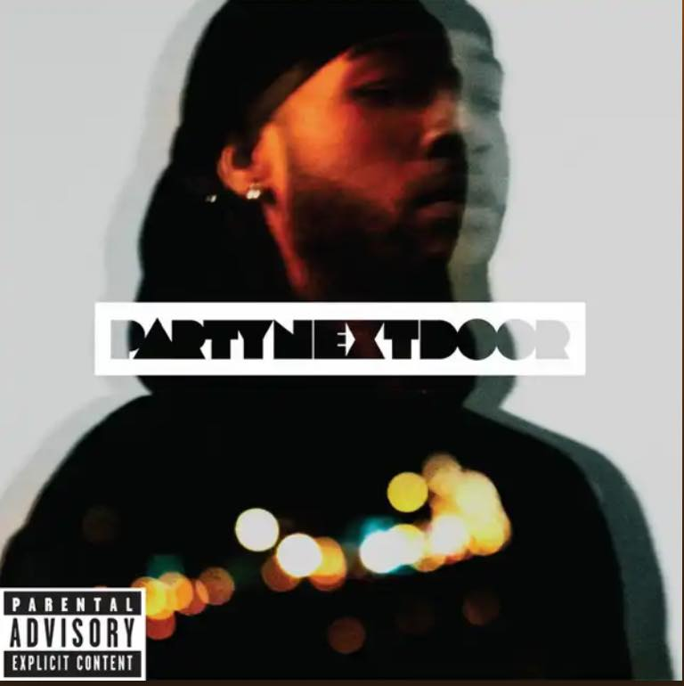

Favorite Artists/Bands:

Taylor Swift
Taylor Alison Swift is an American singer-songwriter. Swift is a leading figure in popular music and the subject of widespread public interest.
Learn More
The 1975
The 1975 are an English pop rock band formed in Wilmslow, Cheshire in 2002. The band consists of Matty Healy, Adam Hann, Ross MacDonald, and George Daniel.
Learn More

Daniel Caesar
Ashton Dumar Norwill Simmonds, known professionally as Daniel Caesar, is a Canadian singer and songwriter.
Learn More
Partynextdoor
Jahron Anthony Brathwaite, known professionally as PARTYNEXTDOOR, is a Canadian R&B singer, songwriter, and record producer.
Learn More
Favorite Albums:
Reputation
published in 2017

A Brief Inquiry Into Online Relationships
published in 2018

Freudian
published in 2017

PARTYNEXTDOOR
published in 2013